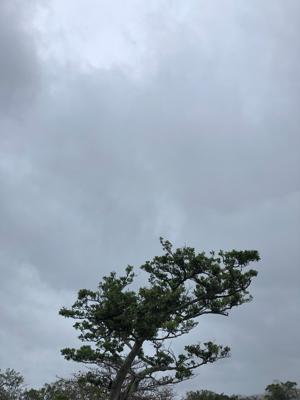
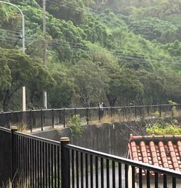

うるがいの話 ある日
最新: 学生服【うるがいの話 ある日】とは 一日だけのプログです
『うるがいの話』の最新一日だけのプログで、通信料が少なく経済的だ。カニの画像をクリックすると全ての日付が載る『うるがいの話』サイトを表示します
|
|
【うるがいの話】 うるがい(ｳﾙｶﾞｲ urugai)とは、『もずくがに』の名前でとても大きくなります。 |
|---|---|
|
|
【カミマヤーの話】 猫のことを方言でマヤーといいます。カミマヤー（kamimayaa）とは、神の猫のことです。 |
|
【たながぁの音楽】 たながぁ（ﾀﾅｶﾞｰtanagaa）とは手長えびのことで、何種類かあり大きいのは車 エビぐらいになります。 |

|
【ぶながぁの話】 ぶながー(bunagaa)とは、赤い髪の毛、赤い身体、そして身長は１ｍ２０ｃｍ ぐらい、川の蟹を食べているの目撃された。場所は沖縄県国頭郡大宜味村のと ある村僕の隣近所に住んでいる爺さんから、聞いた話です。 |
|
|
【ギーマの話】 ギーマ(giima)とは、山原の里山に咲くスズランに似た、 花を付けます。実は食べられます、 気が付くと口の周りが紫になっています。 |
2022年02月15日 (火）学生服
18:12

昨日と違い今日はいい天気である。昨日はほぼ一日雨、少し雨が上がった時間
に傘をさしウォーキングに出かける。金城ダムで小雨の降るなか、片手にスマ
ホを持ちながら、自転車を押して歩く高校生とすれ違う。濡れた学生服はどう
なるのだろう、２着あるのかな。私は一着しかなかった、靴もだ。今考えると
学生時代、社会人になってもしばらくは、スーツも一着だった（靴も）。社会
人になってお洒落な同期のヒガさんに、靴のためにも最低は２つ必要だヨと言
われた。フーン（そんなことを言われもお金ないし）。とさらに雨脚が強くな
って振り返り、高校生を撮る。

１８時０９分 ビットコインの総資産 ￥１４、６９４↑ひゃー